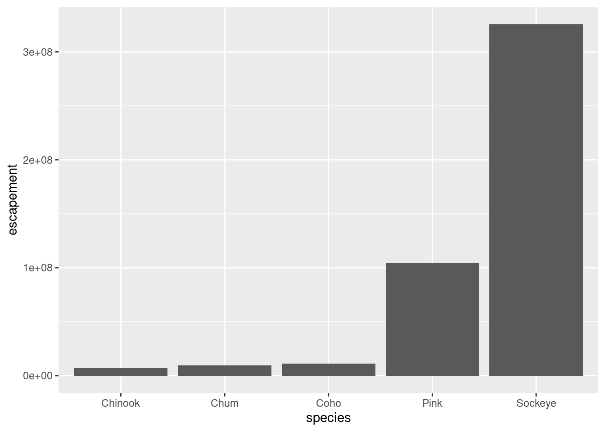
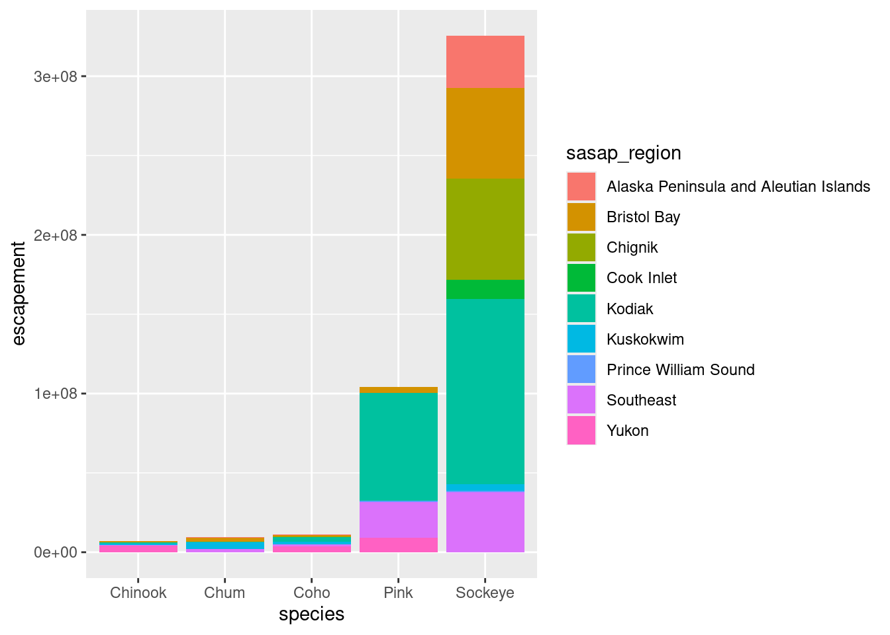
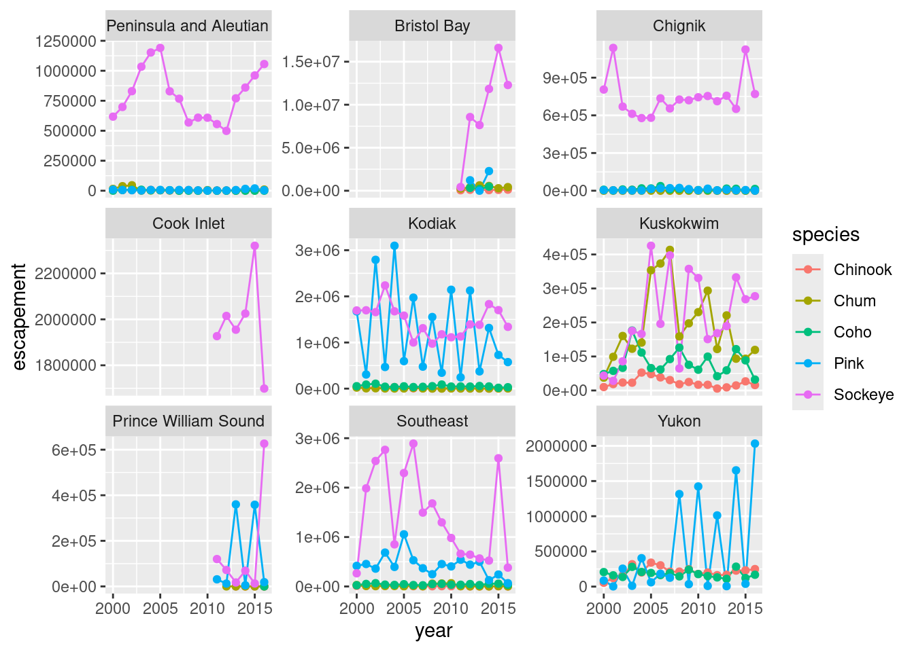
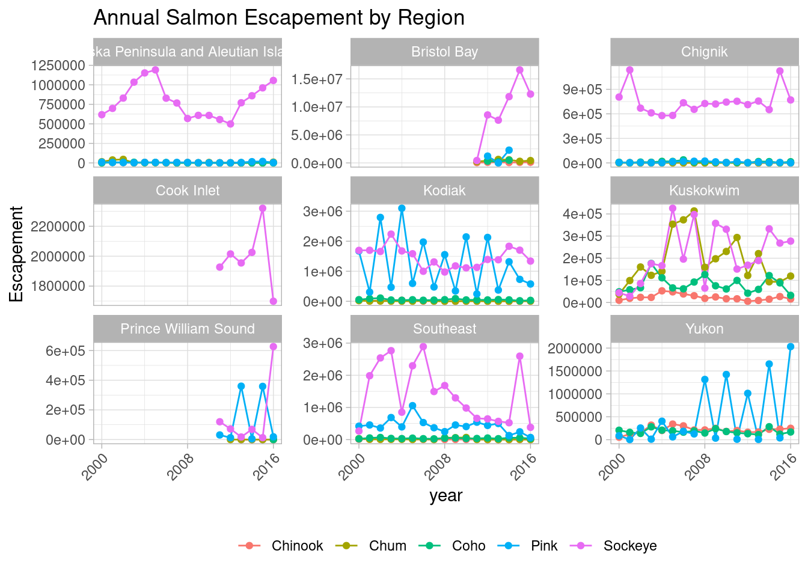

Rows: 505420 Columns: 9
── Column specification ────────────────────────────────────────────────────────
Delimiter: ","
chr (5): Location, SASAP.Region, Species, Method, Source
dbl (3): DailyCount, Latitude, Longitude
date (1): sampleDate
ℹ Use `spec()` to retrieve the full column specification for this data.
ℹ Specify the column types or set `show_col_types = FALSE` to quiet this message.data-viz
Set-up
Read in data
Explore the data
[1] "Location" "SASAP.Region" "sampleDate" "Species" "DailyCount"
[6] "Method" "Latitude" "Longitude" "Source" Rows: 505,420
Columns: 9
$ Location <chr> "Akalura Creek", "Akalura Creek", "Akalura Creek", "Akalu…
$ SASAP.Region <chr> "Kodiak", "Kodiak", "Kodiak", "Kodiak", "Kodiak", "Kodiak…
$ sampleDate <date> 1930-05-24, 1930-05-25, 1930-05-26, 1930-05-27, 1930-05-…
$ Species <chr> "Sockeye", "Sockeye", "Sockeye", "Sockeye", "Sockeye", "S…
$ DailyCount <dbl> 4, 10, 0, 0, 0, 0, 0, 0, 1, 17, 17, 19, 16, 48, 1, 0, 50,…
$ Method <chr> "Unknown", "Unknown", "Unknown", "Unknown", "Unknown", "U…
$ Latitude <dbl> 57.1641, 57.1641, 57.1641, 57.1641, 57.1641, 57.1641, 57.…
$ Longitude <dbl> -154.2287, -154.2287, -154.2287, -154.2287, -154.2287, -1…
$ Source <chr> "ADFG", "ADFG", "ADFG", "ADFG", "ADFG", "ADFG", "ADFG", "…[1] "1921-05-26" "2017-05-14" [1] "Sockeye" "Pink"
[3] "Coho" "Chinook"
[5] "Steelhead Up" "Chum"
[7] "Steelhead Down" "Steelhead trout"
[9] "General dolly varden" "Chum - Summer"
[11] "General cutthroat trout" "Late Run Sockeye"
[13] "Mixed" "Chum - Fall"
[15] "Unknown Salmon" "Anadromous dolly varden"
[17] "Other (non-target)" "Sheefish (inconnu)"
[19] "Whitefish, Broad" "Whitefish, Least Cisco"
[21] "Whitefish, Humpback" Cleaning data
escape <- escape_raw %>%
janitor::clean_names()
colnames(escape)[1] "location" "sasap_region" "sample_date" "species" "daily_count"
[6] "method" "latitude" "longitude" "source" Calculate annual escapements by species and sasap regions
library(dplyr)
annual_esc <- escape %>%
separate(sample_date, c("year", "month", "day"), sep = "-") %>%
mutate(year = as.numeric(year)) %>%
group_by(species, sasap_region, year) %>%
summarize(escapement = sum(daily_count)) %>%
filter(species %in% c("Chinook", "Sockeye", "Chum", "Coho", "Pink"))`summarise()` has grouped output by 'species', 'sasap_region'. You can override
using the `.groups` argument.head(annual_esc)# A tibble: 6 × 4
# Groups: species, sasap_region [1]
species sasap_region year escapement
<chr> <chr> <dbl> <dbl>
1 Chinook Alaska Peninsula and Aleutian Islands 1974 1092
2 Chinook Alaska Peninsula and Aleutian Islands 1975 1917
3 Chinook Alaska Peninsula and Aleutian Islands 1976 3045
4 Chinook Alaska Peninsula and Aleutian Islands 1977 4844
5 Chinook Alaska Peninsula and Aleutian Islands 1978 3901
6 Chinook Alaska Peninsula and Aleutian Islands 1979 10463unique(annual_esc$species)[1] "Chinook" "Chum" "Coho" "Pink" "Sockeye"Plot data
## Option 1 - data and mapping called in the ggplot() function
ggplot(data = annual_esc,
aes(x = species, y = escapement)) +
geom_col()
## Option 2 - data called in ggplot function; mapping called in geom
ggplot(data = annual_esc) +
geom_col(aes(x = species, y = escapement))
## Option 3 - data and mapping called in geom
ggplot() +
geom_col(data = annual_esc,
aes(x = species, y = escapement))
Color plots
ggplot(annual_esc,
aes(x = species, y = escapement,
fill = sasap_region)) +
geom_col()
Creating multiple plots
## Subset with data from years 2000 to 2016
annual_esc_2000s <- annual_esc %>%
filter(year %in% c(2000:2016))
## Quick check
unique(annual_esc_2000s$year) [1] 2000 2001 2002 2003 2004 2005 2006 2007 2008 2009 2010 2011 2012 2013 2014
[16] 2015 2016## Plot with facets
ggplot(annual_esc_2000s,
aes(x = year,
y = escapement,
color = species)) +
geom_line() +
geom_point() +
facet_wrap( ~ sasap_region,
scales = "free_y")
Customizing plot
my_theme <- theme_light() +
theme(legend.position = "bottom",
legend.title = element_blank(),
axis.text.x = element_text(angle = 45, hjust = 1))
ggplot(annual_esc_2000s,
aes(x = year,
y = escapement,
color = species)) +
geom_line() +
geom_point() +
facet_wrap( ~ sasap_region,
scales = "free_y") +
labs(title = "Annual Salmon Escapement by Region",
y = "Escapement") +
my_theme +
scale_x_continuous(breaks = seq(2000,2016,8))
Save plots
ggsave("plots/annualsalmon_esc_region.jpg", width = 8, height = 6, units = "in")Interactive plot
locations <- escape %>%
distinct(location, latitude, longitude) %>%
drop_na()
datatable(locations)Leaflet
leaflet(locations) %>%
addTiles() %>%
addMarkers(
lng = ~ longitude,
lat = ~ latitude,
popup = ~ location
)leaflet(locations) %>%
addWMSTiles(
"https://www.gebco.net/data_and_products/gebco_web_services/web_map_service/mapserv?request=getmap&service=wms&BBOX=-90,-180,90,360&crs=EPSG:4326&format=image/jpeg&layers=gebco_latest&width=1200&height=600&version=1.3.0",
layers = 'GEBCO_LATEST',
attribution = "Imagery reproduced from the GEBCO_2022 Grid, WMS 1.3.0 GetMap, www.gebco.net"
) %>%
addCircleMarkers(
lng = ~ longitude,
lat = ~ latitude,
popup = ~ location,
radius = 5,
# set fill properties
fillColor = "salmon",
fillOpacity = 1,
# set stroke properties
stroke = T,
weight = 0.5,
color = "white",
opacity = 1
)